# 空间建模
# 空间分析基本概念
空间分析是GIS的重要内容，也是评价一个GIS功能强弱的重要标志。
空间分析通过空间数据的分析算法，获取地理对象的空间位置、空间分布、空间形态、空间演变等新信息。
可按不同角度，将GIS空间分析进行分类：
按分析方法看GIS空间分析分类
GIS系统提供的空间分析
各类系统提供的分析能力的差异性很大，主要有查询检索分析、空间形态分析、地形分析、叠置分析、邻域分析、网络分析、图像分析、空间统计分析等。
专用空间模型分析
指在GIS支持下通过建立一定的数学模型实现地理现象的分析和模拟，这是GIS应用深化的重要标志。
按空间数据特性看GIS空间分析分类
空间数据的空间特性分析
- 空间位置分析：指通过空间坐标系中坐标值来确定空间物体的地理位置。
- 空间分布分析：空间分布反映了同类空间物体的群体定位信息。
- 空间形态分析：空间形态反映了空间物体的几何特征，包括形态表示和形态计算两个方面。前者如走向、连通性等，后者如面积、周长、坡度。
- 空间关系分析：空间关系反映空间物体之间的各种关系，如方位关系、距离关系、拓扑关系、相似关系等。
空间数据的非空间特性分析
主要是基于数据库的统计分析
分析空间信息的一般过程：
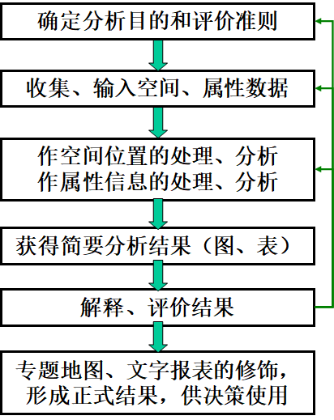# 空间模型基本概念
模型
A model is a simplified representation of a phenomenon or a system.
Models using geographically referenced data are usually called “spatially explicit models.”
模型分类：
- A model may be descriptive or prescriptive.
- A model may be deterministic or stochastic.
- A model may be static or dynamic.
- A model may be deductive or inductive.
构建模型一般过程
- Define the goals of the model
- Break down the model into elements and define the properties of each element and the interactions between the elements
- Implement and calibrate the model
- Validate the model
构建模型的规则
- A GIS is a tool that can process, display, and integrate different data sources including maps, digital elevation models (DEMs), GPS (global positioning system) data, images, and tables.
- A GIS can be used to build a vector-based or raster-based model.
- A GIS has algorithms for conversion between vector and raster data.
- The process of modeling may take place in a GIS or use a GIS to link other computer programs.
# 二值模型
用逻辑表达式从组合地图中选择感兴趣的地图要素与分布范围
输出结果也为二值模型（1为真，0为假）
方法
- 矢量：地图叠加运算，属性组合
- 栅格：格网查询
# 矢量二值模型
To build a vector-based binary model, we can gather the input layers, overlay them, and perform data query from the composite feature layer.
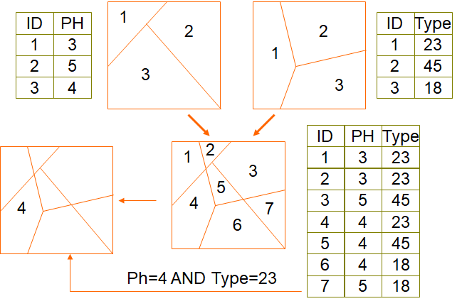矢量二值模型应用
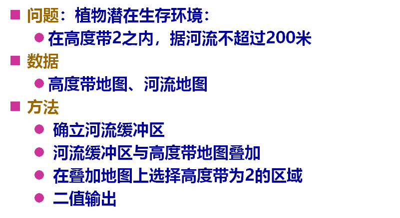
# 栅格二值模型
The raster-based method requires the input rasters, with each raster representing a criterion. A local operation with multiple rasters can then be used to derive the raster-based model from the input rasters.
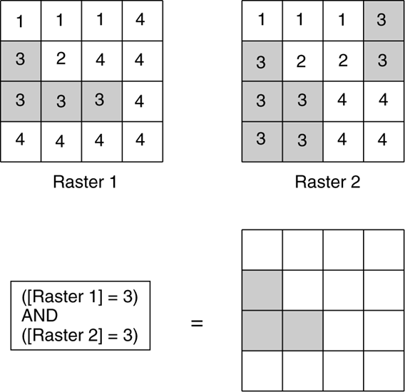To build a raster-based binary model, use the query statement, [Raster 1] = 3 AND [Raster 2] = 3, to select three cells (shaded) and save them to the output raster.
栅格二值模型应用
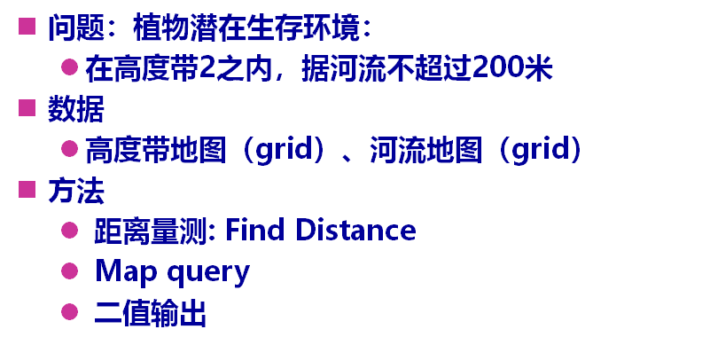
# 二值模型其他应用
- 选择潜在商业用地
- 土地利用规划
- 土壤侵蚀分析
- 空间对象变化
# 指数模型
由组和地图和多个格网计算的指数值产生的等级地图。
过程：
- 评估变量的相对重要性，确定权重
- 观测值进行分类并打分
- 建立指数模型
- 数值归一化并输出： （指数值- 最小指数值）/ 指数值值域
# 基于矢量的指数模型
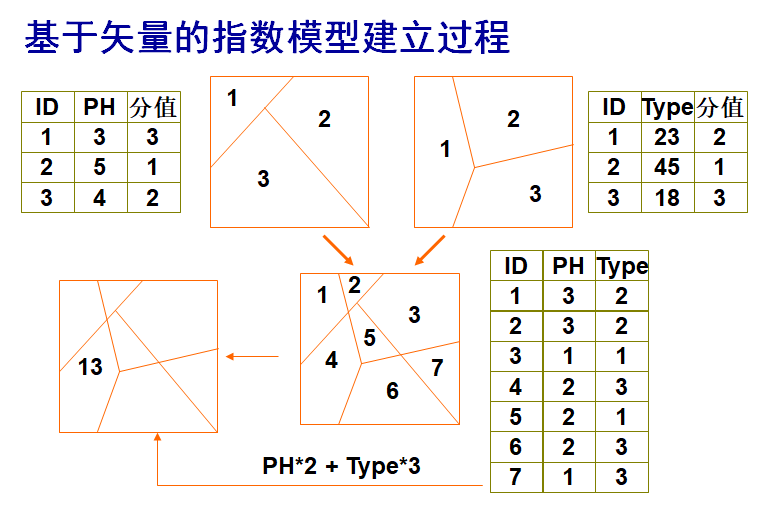# 基于栅格的指数模型
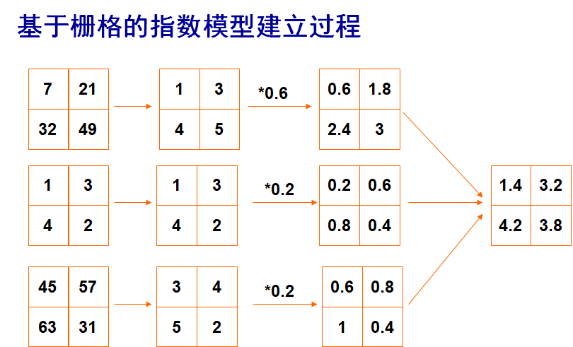# 指数模型应用
通常用于适宜性分析和脆弱性分析
森林保护区土地利用研究
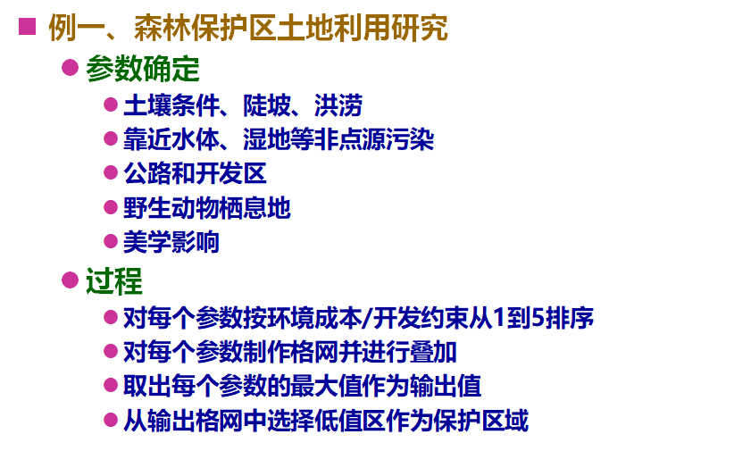地下水污染评价模型
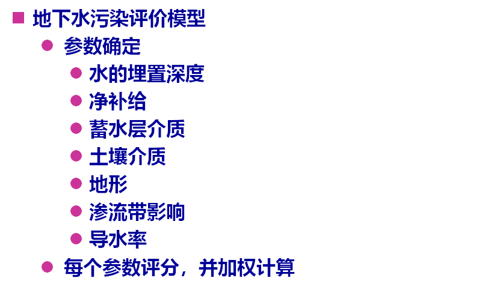
野生生物栖息地适宜性指数模型HIS
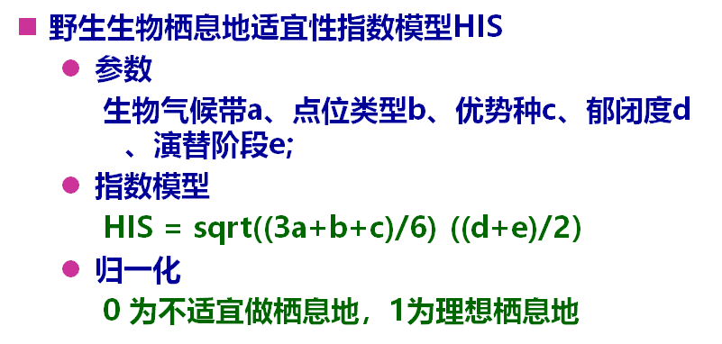森林火灾指数模型
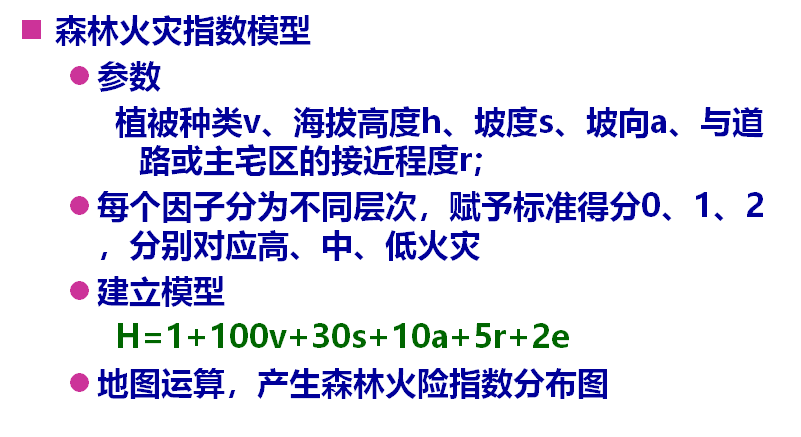
# 回归模型
建立因变量和多个变量之间的关系，可用于预测和评估
通过地图叠加运算进行实现
类型
- 线性回归：数值变量
- 指数回归：因变量为二值而自变量为类别或者数组类型数据
# 线性回归
The primary purpose of linear regression is to predict values of y from values of xi.
Linear regression requires several assumptions about the error, or residual, between the predicted value and the actual value.
Linear regression models have been used for modeling snow accumulation, wildlife home ranges, nonpoint pollution risk, soil moisture, and residential burglaries.
# 局部回归
Local regression analysis, also called geographically weighted regression analysis, uses the information for each known point to derive a local model.
A local regression model’s parameters can vary in space, providing a basis to explore spatial nonstationarity (i.e., the relationship between variables varies over space), as opposed to stationarity (i.e., the relationship between variables remains the same over space) assumed in a global regression model.
# 逻辑回归
Logistic regression is used when the dependent variable is categorical (e.g., presence or absence) and the independent variables are categorical, numeric, or both.
Logistic regression models have been developed for predicting grassland bird habitat, fish habitat, landslide susceptibility, and visitors’ awareness and attitude toward national park designation.
# 回归模型应用
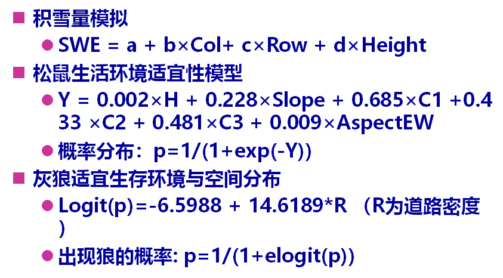# 过程模型
关于现实世界环境过程的知识综合成一组用于定量分析该过程的关系或方程
提供判断或内在解释能力
方程可能比较复杂
输出结果可用于进行预测
# 过程模型应用
通用土壤流失方程USLE
农业非点源模型AGNPS
土壤和水评价模型SWAT
渗流带非点源污染模型
滑坡模拟模型
地下水污染模型
# 空间分析综合应用实例
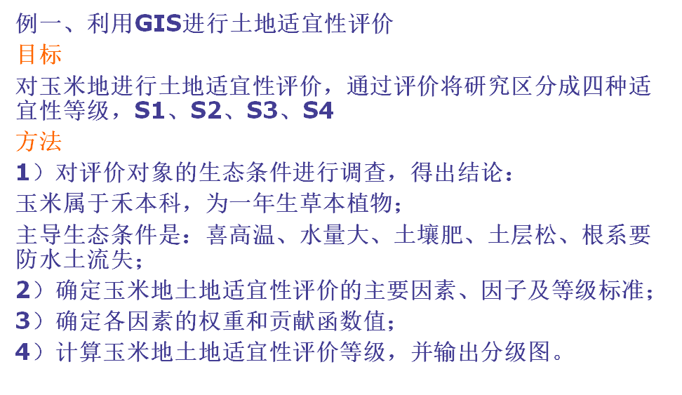 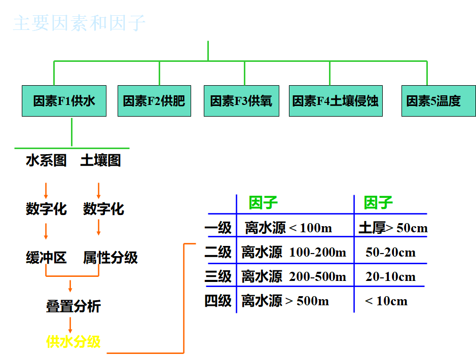 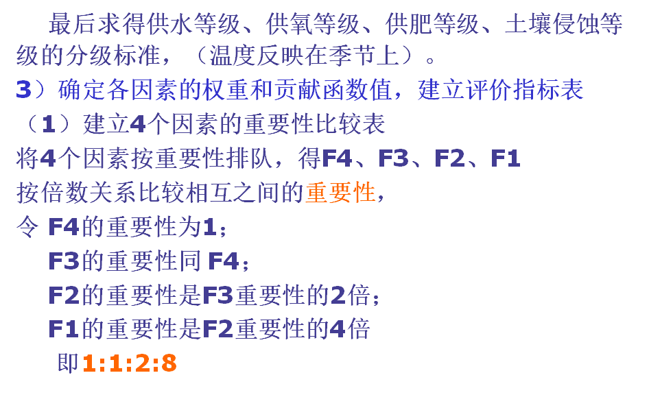 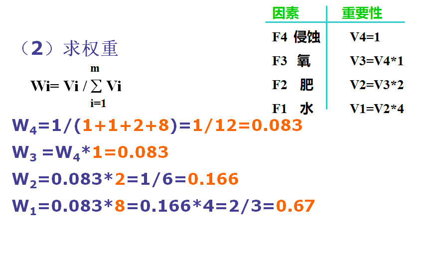 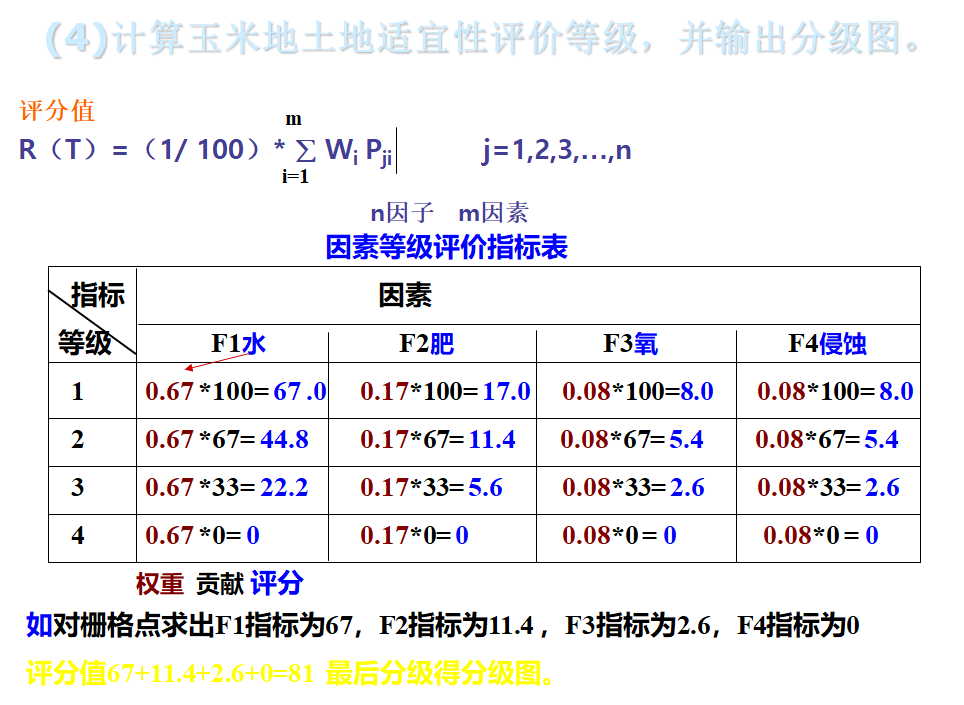
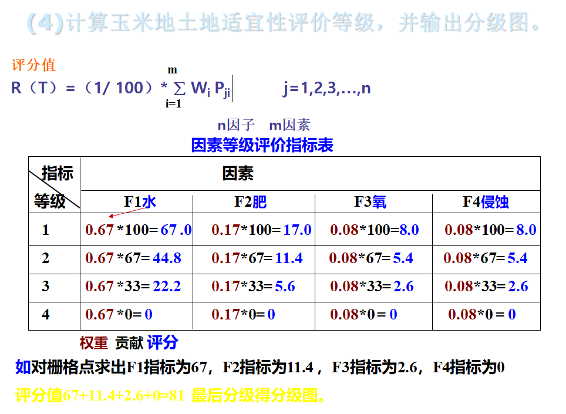